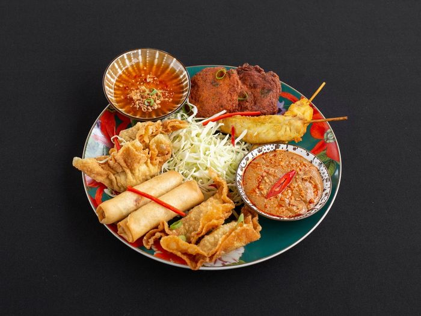
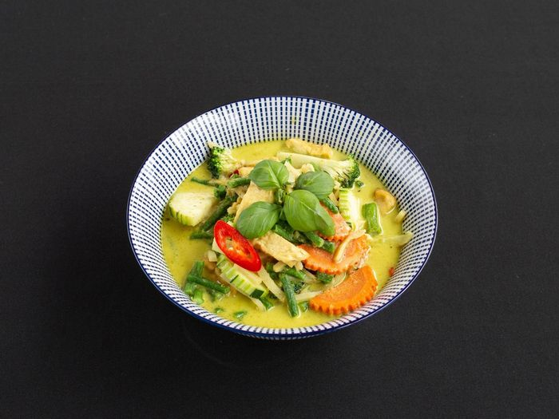
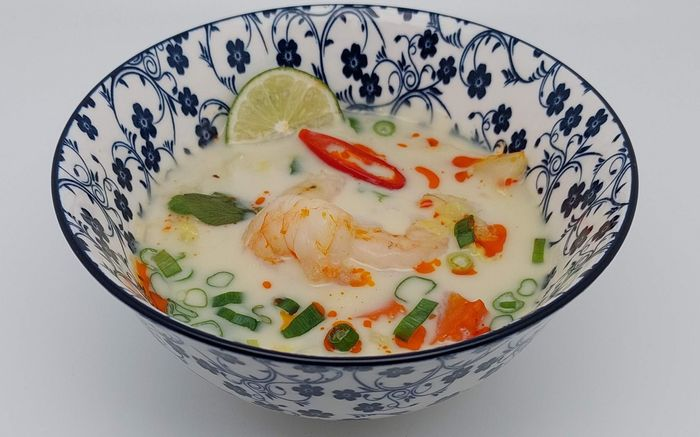
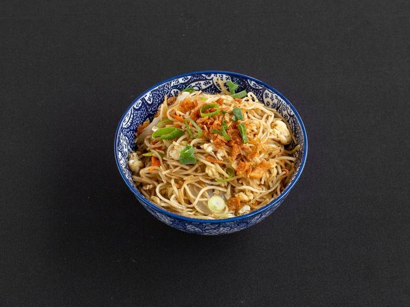
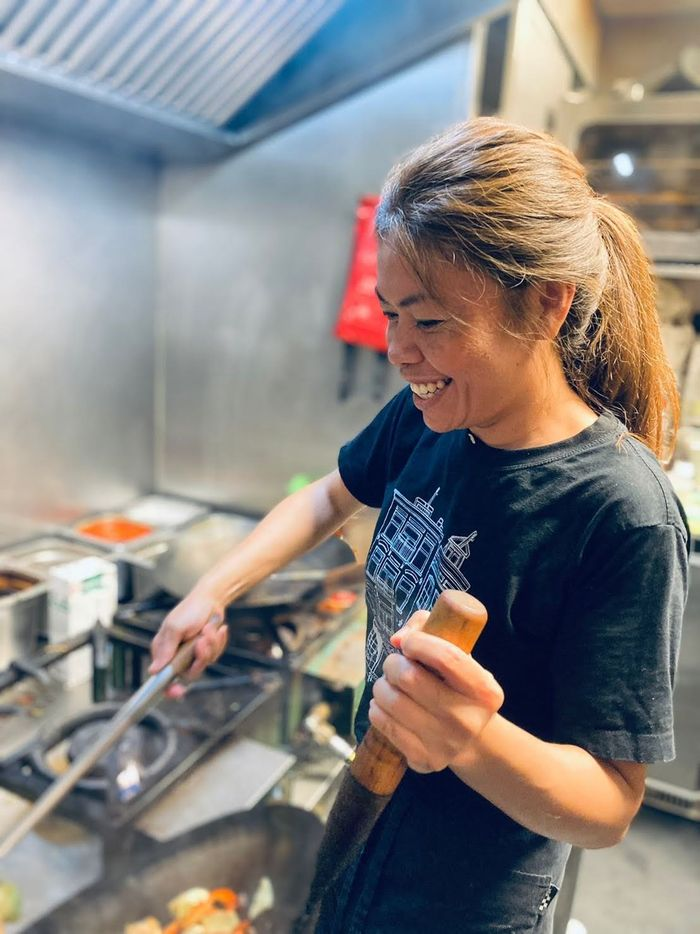
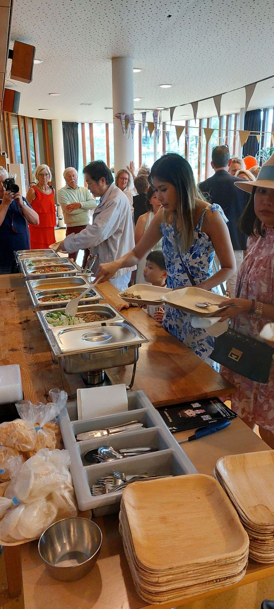
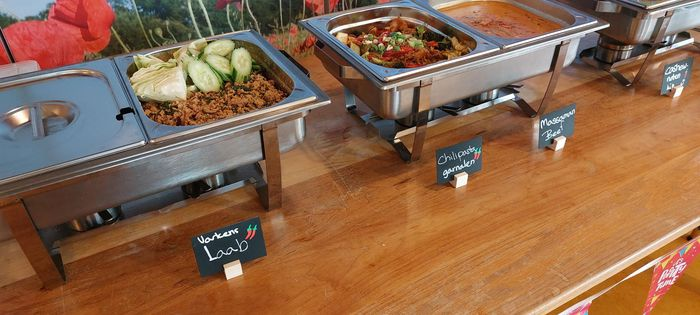
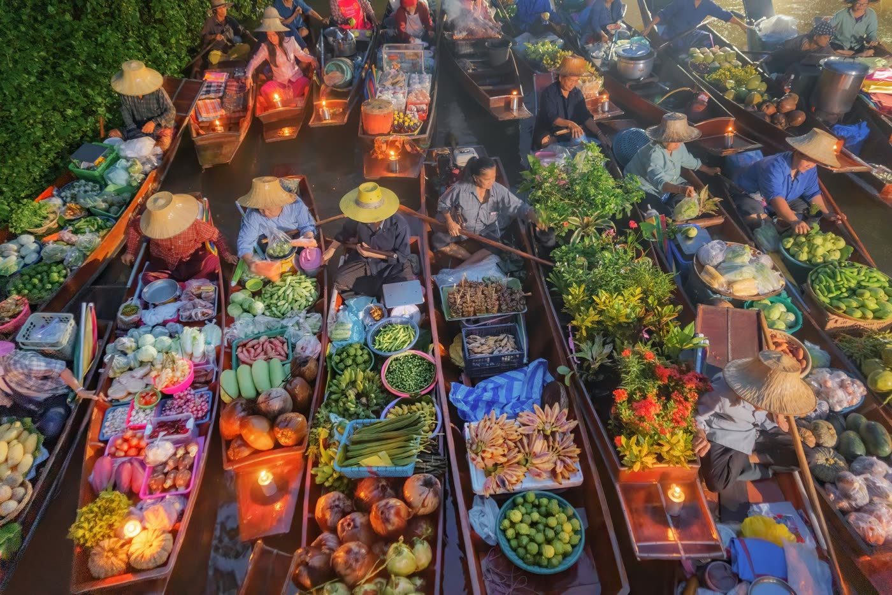

Thai 88
Hét Thaise afhaalrestaurant voor Utrecht Tuinwijk en omgeving. Online bestellen, afhalen of ter plekke eten.
Woensdag t/m zondag open vanaf 16.00 uur
- Eat-in of take-awayGeen tafelbediening, wel altijd plek
- Halal kipEn vegan kan ook: vraag naar de saus op basis van paddenstoelen
- Ook bezorgdVia Thuisbezorgd.nl
Maandspecial
Regelmatig een gerecht in de schijnwerpers. Deze maand:
Drunken noodles Pad Kee Mao
Pittig, aromatisch en authentiek Thais. Laat je verrassen door de intense smaken van een van Thailands populairste streetfoodgerechten.
Met eiernoedels, ei, ui, broccoli, peen, verse chilipepers en basilicum. Licht pittig van zichzelf, maar we maken het ook mild of extra heet.
- Groenten of tofu€ 16,95
- Kip€ 16,95
- Biefstuk, vis of garnalen€ 17,95
Let op: dit gerecht kan niet glutenvrij en niet zonder ei bereid worden.
Bestel de maandspecial



Hoe wil je het hebben?
Wij zijn een Thais restaurant volgens het cafetariaprincipe. Reserveren kan niet en is ook niet nodig: er is altijd plek.
Online bestellen
Kies je gerechten op onze bestelsite en haal ze op wanneer het jou uitkomt.
bestellen.thai88.nlAfhalen of hier eten
Kom langs aan de Antonius Matthaeuslaan 112. Eet thuis of aan een van onze tafels, zonder bediening.
Adres en tijdenLaten bezorgen
Via Thuisbezorgd.nl. De bezorgtijden wijken af van onze gewone openingstijden en bij bezorgen komen er kosten bij.
Naar ThuisbezorgdAllergenen, glutenvrij en MSG
Heb je een allergie of intolerantie? Laat het ons altijd weten bij je bestelling. We denken graag mee en passen gerechten aan waar dat kan.
Per gerecht staat in onze allergenenlijst welke allergenen erin zitten en hoe pittig het is. We werken in een keuken met alle 14 wettelijke allergenen, dus kruisbesmetting kunnen we niet helemaal uitsluiten.
Allergenenlijst per gerecht (pdf)Glutenvrij
Alle curries zijn glutenvrij. Ook Pad See Ew (21), de oestersaus-, cashewnoten- en Sam Rood-gerechten kunnen we glutenvrij maken.
| Groente / tofu | 30, 34, 35, 36, 37, 38, 39 |
|---|---|
| Biefstuk | 50, 54, 55, 56, 57, 58, 59 |
| Kip | 60, 64, 65, 66, 67, 68, 69 |
| Vis | 70, 74, 75, 76, 77, 78, 79 |
| Garnalen | 90, 94, 95, 96, 97, 98, 99 |
| Pad See Ew | 21, met elke basis |
Zet bij je bestelling duidelijk dat het gerecht glutenvrij moet zijn: de garnering bevat normaal vaak gluten. Lijst als pdf
MSG (E621)
We gebruiken mononatriumglutamaat maar heel beperkt: alleen een klein beetje in de gebakken rijst (nassi) en de Chow Mein noedels. Omdat het pas tijdens het bereiden gaat, kunnen we het ook weglaten. Zet het in het opmerkingenveld, per gerecht of voor je hele bestelling.
Meer over MSG
MSG wordt gemaakt door fermentatie, net als yoghurt of bier: bacteriën zetten de suikers uit suikerriet, suikerbieten of maïs om in glutamaat, dat wordt gezuiverd en gecombineerd met een beetje natrium.
De slechte naam komt vooral uit de jaren zestig. In 1969 ontstond de term “Chinese Restaurant Syndrome” voor klachten als hoofdpijn en hartkloppingen, maar een overtuigend bewijs voor een verband met MSG is er niet.
Onderzoek van onder meer de European Food Safety Authority en de World Health Organization laat zien dat MSG veilig is bij normaal gebruik. Glutamaat zit van nature ook in tomaten, kaas en paddenstoelen, en je lichaam maakt geen onderscheid.
Hallo, wij zijn Thai 88
Op 1 april 2022 kregen we de sleutel van ons restaurant aan de Antonius Matthaeuslaan 112. Al snel kwamen de eerste gasten, en de buurt ontving ons met open armen. Kap khun ka.
Sindsdien hebben we met onze gasten prachtige momenten beleefd: verjaardagen, jubilea, gezellige avonden met vrienden en familie en spontane ontmoetingen. Inmiddels hebben we meer dan 30.000 bestellingen verwerkt, en dat danken we helemaal aan jullie steun en enthousiasme.
Sterren van de 5, peildatum maart 2026. Lees de reviews of laat een Google review achter.

Waarom de naam Thai 88?
Thai
Staat voor de roots van Tao, de drijvende kracht achter Thai 88. Tao groeide op in Bangkok en studeerde als tiener zeven jaar in Londen, waar ze de westerse cultuur goed leerde kennen. Terug in Bangkok studeerde ze af en deed ze veel ervaring op bij het New York Steakhouse in het J.W. Marriott Hotel, waar ze later Guest Relations Officer werd. In 2013 kwam ze naar Nederland en werkte ze in meerdere Thaise restaurants. In onze keuken maken we Thaise gerechten, klassiek en met een eigen twist.
88
Staat voor geluk. In oosterse culturen is 8 een gelukscijfer: een acht lijkt op het teken voor oneindigheid, ∞. Twee achten naast elkaar lijken op het Chinese karakter voor dubbel geluk. En er zijn acht taoïstische symbolen, acht boeddhistische schatten, acht bloemblaadjes aan de lotus en acht Onsterfelijken.
Catering en grote groepen
We hebben met veel plezier catering verzorgd voor allerlei partijen en evenementen, en zo onze keuken buiten het restaurant gedeeld.
Krijg je veel gasten, heb je vragen of speciale wensen? Mail ons of vul het contactformulier in. We reageren zeer snel.



Thailand en de cultuur
Het boeddhisme speelt een belangrijke rol in de Thaise cultuur. Respect, vriendelijkheid, dankbaarheid en innerlijke rust vormen de basis. Met meditatie en mindfulness leren mensen hun gedachten tot rust te brengen en bewuster te leven. Steeds meer mensen in Nederland ontdekken het boeddhisme ook als manier om meer balans, rust en geluk te ervaren.
In Nederland brengt onder andere de Dhammakaya-tempel deze traditie dichterbij, met meditatiebijeenkomsten, activiteiten en introducties voor iedereen die interesse heeft.
Wij voelen ons sterk verbonden met deze waarden van aandacht, respect en gastvrijheid. Daarom zijn we trotse sponsor van Stichting Dhammakaya Nederland. Zo brengen we niet alleen de smaken van Thailand naar Nederland, maar ook een stukje van de cultuur.
Stichting Dhammakaya NederlandWerken bij Thai 88
Bij ons is het leuker! Wie je bent vinden we belangrijker dan wat je kunt. We zijn een klein restaurant en leren je alles, als jij maar wilt.
We moeten op elkaar kunnen vertrouwen, dus we letten meer op je werkhouding dan op je ervaring. Of je nu carrière wilt maken, een bijbaan zoekt of eigenlijk iets voor jezelf wilt beginnen maar nog niet durft: we luisteren graag naar jouw verhaal en je dromen.
Open sollicitatie 8 – 38 uur per week
- Je werkt tussen 14.00 en 21.30 uur (bespreekbaar)
- Je spreekt Nederlands en Engels
- Je hebt ervaring met klanten, bijvoorbeeld als kassamedewerker of receptionist
- Je bent betrouwbaar, zelfstandig en flexibel, en wilt je voor langere tijd binden
- Salaris gelijk aan of hoger dan past bij je ervaring, reiskosten vergoed
- Alle voorwaarden volgens de Horeca-cao
In English
We are always looking for new talent. Who you are matters more to us than what you can do: we are a small restaurant and can teach you everything if you are willing. We are a cafeteria, so most guests take their meal home, but there are non-reservable seats to eat in. Working weeks are 8 to 38 hours, between 14:00 and 21:30 (negotiable). You speak Dutch and English and have experience with customers. Salary will match or exceed your experience, travel expenses are reimbursed, and all conditions follow the Horeca CAO.
Openingstijden
| Maandag | gesloten |
|---|---|
| Dinsdag | gesloten |
| Woensdag | 16.00 – 20.00 |
| Donderdag | 16.00 – 20.00 |
| Vrijdag | 16.00 – 21.00 |
| Zaterdag | 16.00 – 21.00 |
| Zondag | 16.00 – 21.00 |
Bezorgen via Thuisbezorgd kan op andere tijden.
Contact
Antonius Matthaeuslaan 112
3515 AV Utrecht (Tuinwijk)
Post een foto van je bezoek of bestelling, we waarderen alle feedback. Bestel je online, dan krijg je twee uur later een uitnodiging voor een review. Anderen kunnen een review op Google achterlaten.